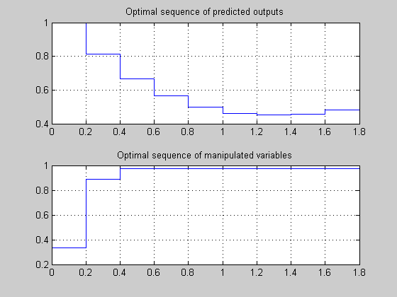
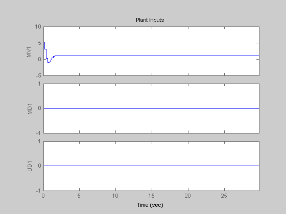

This demonstration shows several features of the MPC toolbox on a test system with one measured output, one manipulated variable, one measured disturbance, and one unmeasured disturbance.
Author: A. Bemporad
We start defining the plant to be controlled
sys=ss(tf({1,1,1},{[1 .5 1],[1 1],[.7 .5 1]}));
Now, setup an MPC controller object
Ts=.2; % sampling time model=c2d(sys,Ts); % prediction model
Define type of input signals: the first signal is a manipulated variable, the second signal is a measured disturbance, the third one is an unmeasured disturbance
model=setmpcsignals(model,'MV',1,'MD',2,'UD',3);
Define the structure of models used by the MPC controller
Model=[]; % reset structure Model Model.Plant=model; % Disturbance model: Integrator driven by white noise with variance=1000 Model.Disturbance=tf(sqrt(1000),[1 0]);
Define prediction and control horizons
p=[]; % prediction horizon (take default one) m=3; % control horizon
Let us assume default value for weights and build the MPC object
MPCobj=mpc(Model,Ts,p,m);
Define constraints on the manipulated variable
MPCobj.MV=struct('Min',0,'Max',1,'RateMin',-10,'RateMax',10);
Tstop=30; % simulation time Tf=round(Tstop/Ts); % number of simulation steps r=ones(Tf,1); % reference trajectory v=[zeros(Tf/3,1);ones(2*Tf/3,1)]; % measured disturbance trajectory
Run the closed-loop simulation and plot results
close all
sim(MPCobj,Tf,r,v);
We want to specify disturbance and noise signals. In order to do this, we create the MPC simulation object 'SimOptions'
d=[zeros(2*Tf/3,1);-0.5*ones(Tf/3,1)]; % unmeasured disturbance trajectory SimOptions=mpcsimopt(MPCobj); SimOptions.Unmeas=d; % unmeasured input disturbance SimOptions.OutputNoise=.001*(rand(Tf,1)-.5); % output measurement noise SimOptions.InputNoise=.05*(rand(Tf,1)-.5); % noise on manipulated variables
Run the closed-loop simulation and save the results to workspace
[y,t,u,xp,xmpc]=sim(MPCobj,Tf,r,v,SimOptions);
Plot results
close all subplot(211) plot(0:Tf-1,y,0:Tf-1,r) title('Output'); grid subplot(212) plot(0:Tf-1,u) title('Input'); grid
We now want to test the robustness of the MPC controller against a model mismatch. Assume the true plant generating the data is the following:
simModel=ss(tf({1,1,1},{[1 .8 1],[1 2],[.6 .6 1]}));
simModel=setmpcsignals(simModel,'MV',1,'MD',2,'UD',3);
simModel=struct('Plant',simModel);
simModel.Nominal.Y=0.1; % The nominal value of the output of the true plant is 0.1
simModel.Nominal.X=-.1*[1 1 1 1 1];
SimOptions.Model=simModel;
SimOptions.plantinit=[0.1 0 -0.1 0 .05]; % Initial state of the true plant
SimOptions.OutputNoise=[]; % remove output measurement noise
SimOptions.InputNoise=[]; % remove noise on manipulated variables
close all
sim(MPCobj,Tf,r,v,SimOptions);
Let us now relax the constraints on manipulated variables
MPCobj.MV.MinECR=1;
MPCobj.MV.MaxECR=1;
% Keep constraints on manipulated variable rates as hard constraints
MPCobj.MV.RateMinECR=0;
MPCobj.MV.RateMaxECR=0;
Define an output constraint
MPCobj.OV=struct('Max',1.1);
and soften it
MPCobj.OV.MaxECR=1;
Run a new closed-loop simulation
close all
sim(MPCobj,Tf,r,v);
Input constraints have been slightly violated, output constraints have been quite violated. Let us penalize more output constraints and rerun the simulation
MPCobj.OV.MaxECR=0.001; % The closer to zero, the harder the constraint close all sim(MPCobj,Tf,r,v);
The MPC toolbox is using by default a Kalman filter to estimate the state of plant, disturbance, and noise models. We may want to provide our own observer.
Let us first retrieve the default estimator gain (Kalman gain) and state-space matrices
[M,A1,Cm1]=getestim(MPCobj);
The default observer poles are:
e=eig(A1-A1*M*Cm1); fprintf('\nDefault observer poles: [%s]\n',sprintf('%5.4f ',e));
Default observer poles: [0.5708 0.5708 0.9334 0.9334 0.4967 0.8189 ]
We design now a state estimator for the MPC controller by pole-placement
poles=[.8 .75 .7 .85 .6 .81]; %poles=3*[.10 .11 .12 .13 .14 .15]; % Fast observer L=place(A1',Cm1',poles)'; M=A1\L; setestim(MPCobj,M); % (the gain M is stored inside the MPC object)
Testing the behavior of the prediction model in open-loop is easy using method SIM. We must set the 'OpenLoop' flag on, and provide the sequence of manipulated variables that excite the system
SimOptions.OpenLoop='on';
SimOptions.MVSignal=sin([0:Tf-1]'/10);
As the reference signal will be ignored, we can avoid specifying it
close all
sim(MPCobj,Tf,[],v,SimOptions);
How can we know if the designed MPC controller will be able to reject constant output disturbances and track constant set-point with zero offsets in steady-state ? We can compute the DC gain from output disturbances to controlled outputs using CLOFFSET
DC=cloffset(MPCobj);
disp(sprintf('DC gain from output disturbance to output = %5.8f (=%g) \n',DC,DC));
DC gain from output disturbance to output = -0.00000000 (=-2.88658e-015)
A zero gain means that the output will track the desired set-point
We may just want to compute the MPC control action inside our simulation code. Let's see an example.
First we get the discrete-time state-space matrices of the plant
[A,B,C,D]=ssdata(model); Tstop=30; %Simulation time x=[0 0 0 0 0]'; % Initial state of the plant xmpc=mpcstate(MPCobj); % Initial state of the MPC controller r=1; % Output reference trajectory
We store the closed-loop MPC trajectories in arrays YY,UU,XX,RR
YY=[]; UU=[]; XX=[]; RR=[];
Main simulation loop
for t=0:round(Tstop/Ts)-1, XX=[XX,x]; % Define measured disturbance signal v=0; if t*Ts>=10, v=1; end % Define unmeasured disturbance signal d=0; if t*Ts>=20, d=-0.5; end % Plant equations: output update (note: no feedthrough from MV to Y, D(:,1)=0) y=C*x+D(:,2)*v+D(:,3)*d; YY=[YY,y]; % Compute MPC law u=mpcmove(MPCobj,xmpc,y,r,v); % Plant equations: state update x=A*x+B(:,1)*u+B(:,2)*v+B(:,3)*d; UU=[UU,u]; end % Plot results close all subplot(211) plot(0:Ts:Tstop-Ts,YY) grid title('Output'); subplot(212) plot(0:Ts:Tstop-Ts,UU) grid title('Input');
If at any time during the simulation we want to check the optimal predicted trajectories, we can use an extended version of MPCMOVE. Assume we want to start from the current state and have a set-point change to 0.5, and assume the measured disturbance has disappeared
r=0.5; v=0; [u,Info]=mpcmove(MPCobj,xmpc,y,r,v);
We now extract the optimal predicted trajectories
topt=Info.Topt; yopt=Info.Yopt; uopt=Info.Uopt; close all subplot(211) stairs(topt,yopt); title('Optimal sequence of predicted outputs') grid subplot(212) stairs(topt,uopt); title('Optimal sequence of manipulated variables') grid xmpc
MPCSTATE object with fields
Plant: [-0.0451 0.4922 0.8187 0.0091 -0.3469]
Disturbance: -0.0633
Noise: [1x0 double]
LastMove: 0.3333
 When the constraints are not active, the MPC controller behaves like a linear controller. We can then get the state-space form of the MPC controller
[LTIMPC,BLr,DLr,BLv,DLv]=ss(MPCobj);
Get state-space matrices of linearized controller
[AL,BL,CL,DL]=ssdata(LTIMPC);
Simulate linear MPC closed-loop system and compare the linearized MPC controller with the original MPC controller with constraints turned off
MPCobj.MV=[]; % No input constraints MPCobj.OV=[]; % No output constraints Tstop=5; %Simulation time xL=zeros(size(BL)); % Initial state of linearized MPC controller x=[0 0 0 0 0]'; % Initial state of plant y=0; % Initial measured output r=1; % Output reference set-point u=0; % Previous input command YY=[]; XX=[]; RR=[]; xmpc=mpcstate(MPCobj); for t=0:round(Tstop/Ts)-1, YY=[YY,y]; XX=[XX,x]; v=0; if t*Ts>=10, v=1; end d=0; if t*Ts>=20, d=-0.5; end uold=u; % Compute the linear MPC control action u=CL*xL+DL*y+DLr*r+DLv*v; % Compare the input move with the one provided by MPCMOVE uMPC=mpcmove(MPCobj,xmpc,y,r,v); disp(sprintf('t=%5.2f, input move u=%7.4f (u=%7.4f is provided by MPCMOVE)',t*Ts,u,uMPC)); % Update plant equations x=A*x+B(:,1)*u+B(:,2)*v+B(:,3)*d; % Update controller equations xL=AL*xL+BL*y+BLv*v+BLr*r; % Update output equations y=C*x+D(:,1)*u+D(:,2)*v+D(:,3)*d; end
t= 0.00, input move u= 5.2478 (u= 5.2478 is provided by MPCMOVE) t= 0.20, input move u= 3.0134 (u= 3.0134 is provided by MPCMOVE) t= 0.40, input move u= 0.2281 (u= 0.2281 is provided by MPCMOVE) t= 0.60, input move u=-0.9952 (u=-0.9952 is provided by MPCMOVE) t= 0.80, input move u=-0.8749 (u=-0.8749 is provided by MPCMOVE) t= 1.00, input move u=-0.2022 (u=-0.2022 is provided by MPCMOVE) t= 1.20, input move u= 0.4459 (u= 0.4459 is provided by MPCMOVE) t= 1.40, input move u= 0.8489 (u= 0.8489 is provided by MPCMOVE) t= 1.60, input move u= 1.0192 (u= 1.0192 is provided by MPCMOVE) t= 1.80, input move u= 1.0511 (u= 1.0511 is provided by MPCMOVE) t= 2.00, input move u= 1.0304 (u= 1.0304 is provided by MPCMOVE) t= 2.20, input move u= 1.0053 (u= 1.0053 is provided by MPCMOVE) t= 2.40, input move u= 0.9920 (u= 0.9920 is provided by MPCMOVE) t= 2.60, input move u= 0.9896 (u= 0.9896 is provided by MPCMOVE) t= 2.80, input move u= 0.9925 (u= 0.9925 is provided by MPCMOVE) t= 3.00, input move u= 0.9964 (u= 0.9964 is provided by MPCMOVE) t= 3.20, input move u= 0.9990 (u= 0.9990 is provided by MPCMOVE) t= 3.40, input move u= 1.0002 (u= 1.0002 is provided by MPCMOVE) t= 3.60, input move u= 1.0004 (u= 1.0004 is provided by MPCMOVE) t= 3.80, input move u= 1.0003 (u= 1.0003 is provided by MPCMOVE) t= 4.00, input move u= 1.0001 (u= 1.0001 is provided by MPCMOVE) t= 4.20, input move u= 1.0000 (u= 1.0000 is provided by MPCMOVE) t= 4.40, input move u= 0.9999 (u= 0.9999 is provided by MPCMOVE) t= 4.60, input move u= 1.0000 (u= 1.0000 is provided by MPCMOVE) t= 4.80, input move u= 1.0000 (u= 1.0000 is provided by MPCMOVE)
Plot results
close all
plot(0:Ts:Tstop-Ts,YY)
grid
Running a closed-loop where all constraints are turned off is easy using SIM. We just specify an option in the SimOptions structure:
SimOptions=mpcsimopt(MPCobj); SimOptions.Constr='off'; % Remove all MPC constraints SimOptions.Unmeas=d; % unmeasured input disturbance
Run the closed-loop simulation and plot results
close all
sim(MPCobj,Tf,r,v,SimOptions);
 MPC can be also used in a Simulink diagram. Let us recreate the MPC object
Model.Disturbance=tf(sqrt(1000),[1 0]); p=[]; m=3; MPCobj=mpc(Model,Ts,p,m); MPCobj.MV=struct('Min',0,'Max',1,'RateMin',-10,'RateMax',10);
The continuous-time plant to be controlled has the following state-space realization:
[A,B,C,D]=ssdata(sys);
Now simulate closed-loop MPC in Simulink
Tstop=30; % Simulation time
Open the simulink diagram 'MPC_MISO.MDL'
mpc_miso
Run simulation
sim('mpc_miso',Tstop)
manipulated
variable
measured output and reference
measured disturbance
unmeasured disturbance
Let's say we know that output measurements are affected by a sinusoidal measurement noise of frequency 0.1 Hz. We want to inform the MPC object about this so that state estimates can be improved
omega=2*pi/10; MPCobj.Model.Noise=0.5*tf(omega^2,[1 0 omega^2]);
We also revised the MPC design
MPCobj.Model.Disturbance=.1; % Model for unmeasured disturbance = white Gaussian noise with zero mean and variance 0.01 MPCobj.weights=struct('MV',0,'MVRate',0.1,'OV',.005); MPCobj.predictionhorizon=40; MPCobj.controlhorizon=3;
Open the simulink diagram 'MPC_MISONOISE.MDL'
mpc_misonoise
Tstop=150; %Simulation time
Run simulation
sim('mpc_misonoise',Tstop);
manipulated
variable
measured output and reference